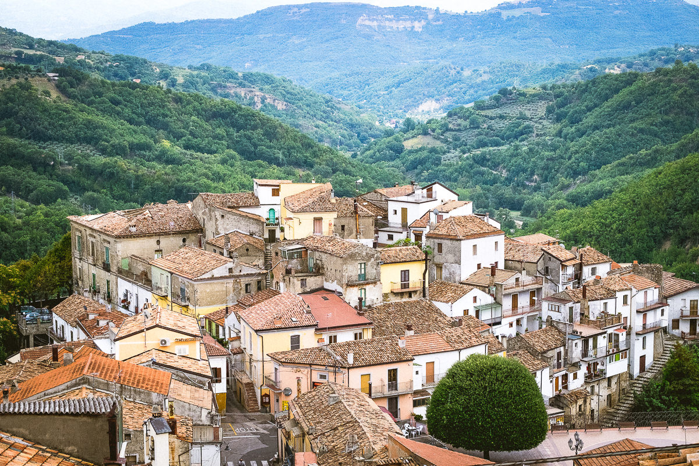
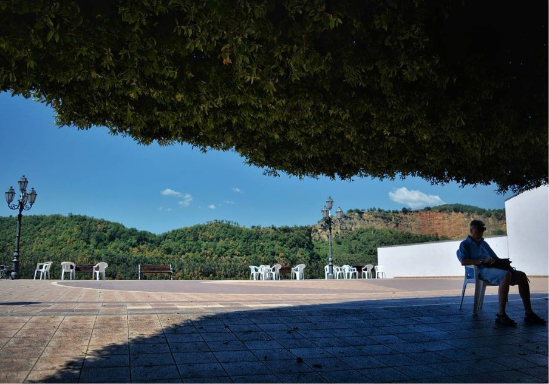

Presidente
Nome Cognome
Coordinamento e rappresentanza della Consulta.

La Consulta Giovanile Comunale è lo spazio istituzionale dove i giovani si confrontano, avanzano proposte e collaborano con l’Amministrazione.
La Consulta Giovanile è uno spazio di partecipazione dedicato ai giovani di Castronuovo di Sant’Andrea: un punto di incontro per confrontarsi, proporre iniziative e contribuire alla vita del paese.
Raccogliere bisogni, idee e proposte dei giovani.
Favorire il dialogo e il coinvolgimento nella comunità.
Trasformare le proposte in iniziative e collaborazioni.
Le persone e i ruoli che organizzano le attività e danno voce ai giovani del paese.
Coordinamento e rappresentanza della Consulta.
Supporto al Presidente e coordinamento delle attività.
Verbali, comunicazioni e supporto organizzativo.
Organo collegiale composto da cinque consiglieri.
Ambiti di lavoro aperti al confronto e alle proposte della comunità giovanile.

Iniziative culturali, espressione artistica e tradizioni locali.
Occasioni per incontrarsi e rafforzare il senso di comunità.
Proposte per un Castronuovo più vivo e accogliente.
Dialogo con il Comune, le associazioni e il territorio.
La nostra missione: promuovere cittadinanza attiva, creatività, inclusione e collaborazione, valorizzando il legame tra nuove generazioni e territorio.
Date e dettagli di incontri e iniziative saranno pubblicati qui. Per essere aggiornato scrivi a consultagiovanilecastronuovo@gmail.com.
Le comunicazioni ufficiali della Consulta saranno pubblicate in questa sezione.
Hai una proposta, un progetto o un tema da portare all’attenzione della Consulta? Contattaci e contribuisci al dialogo con i giovani del territorio.
È uno spazio di partecipazione e confronto che favorisce il coinvolgimento dei giovani nella vita sociale, culturale e istituzionale del territorio.
Scrivi a consultagiovanilecastronuovo@gmail.com descrivendo la proposta o il tema che vuoi condividere.
Nella sezione Partecipa sarà collegata la pagina dedicata sul sito del Comune, non appena disponibile.
Consulta l’informativa privacy. Le foto di persone, in particolare di minori, sono pubblicate solo con le autorizzazioni previste.
Per informazioni, proposte e collaborazioni scrivi alla Consulta.
consultagiovanilecastronuovo@gmail.comCastronuovo di Sant’Andrea (PZ)